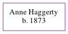

Anne Haggerty 1873 -
[ Home ] | [ Calendar ] | [ Surnames Index ] | [ Census Index ] | [ Family History ]Anne Haggerty was born in Moone, , Kildare, Ireland in 18731. On 31 March 1901, she was living in Cloneen, Tipperary, Ireland1.
Citations
- Web: Ireland, Census, 1901 Ancestry.com Operations, Inc. (Relation to Head of House: Daughter)
Family Tree
Generated by ged2site. Last updated on Jun 6, 2024